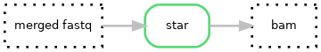

Hydra-genetics alignment module
The alignment module consists of alignment steps, such as alignment against a reference genome and duplicate filtering. The module takes .fastq files as input and outputs .bam files. BWA-mem is used to align DNA data while STAR is used for RNA data. Picard is used for duplicate marking and samtools for merging, sorting, and indexing .bam files. When UMI barcodes are used consensus reads are created using fgbio in combination with BWA-mem.
DNA steps

RNA steps

Module input files
Trimmed or untrimmed merged .fastq files.
prealignment/merged/{sample}_{type}_{read}.fastq.gz
Module output files
Aligned, merged and sorted .bam files as well as chromosome split .bam files for speeding up downstream analysis. UMI-consensus-files get a umi tag added to the bam-filename.
alignment/samtools_merge_bam/{sample}_{type}.bamalignment/picard_mark_duplicates/{sample}_{type}_{chr}.bamalignment/bwa_mem_realign_consensus_reads/{sample}_{type}_{chr}.umi.bamalignment/samtools_extract_reads_umi/{sample}_{type}_{chr}.umi.bamalignment/star/{sample}_{type}.bamalignment/star/{sample}_{type}.SJ.out.tab